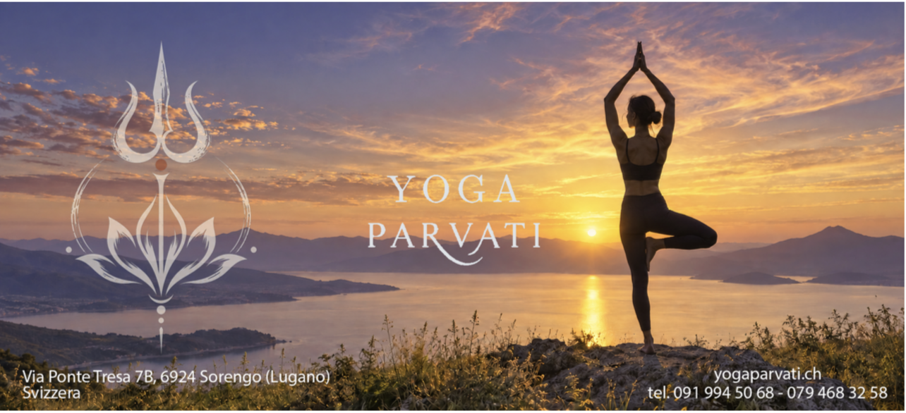
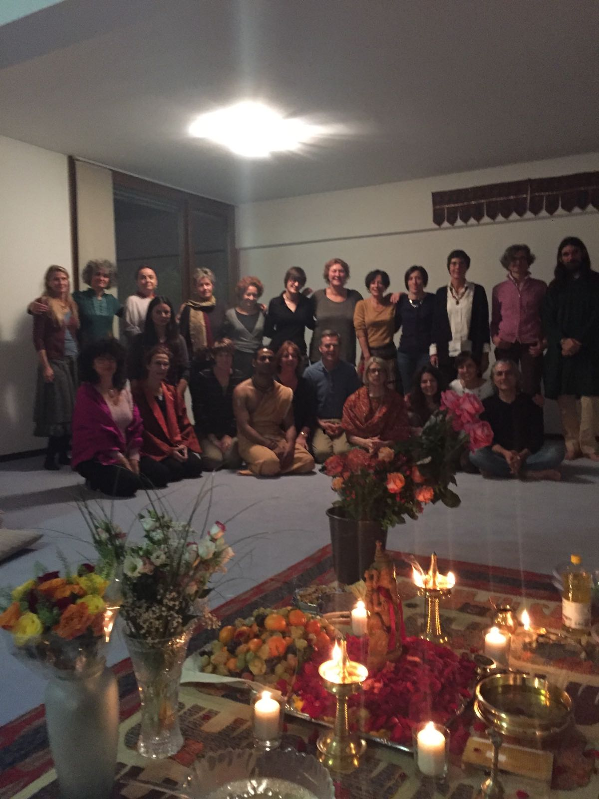
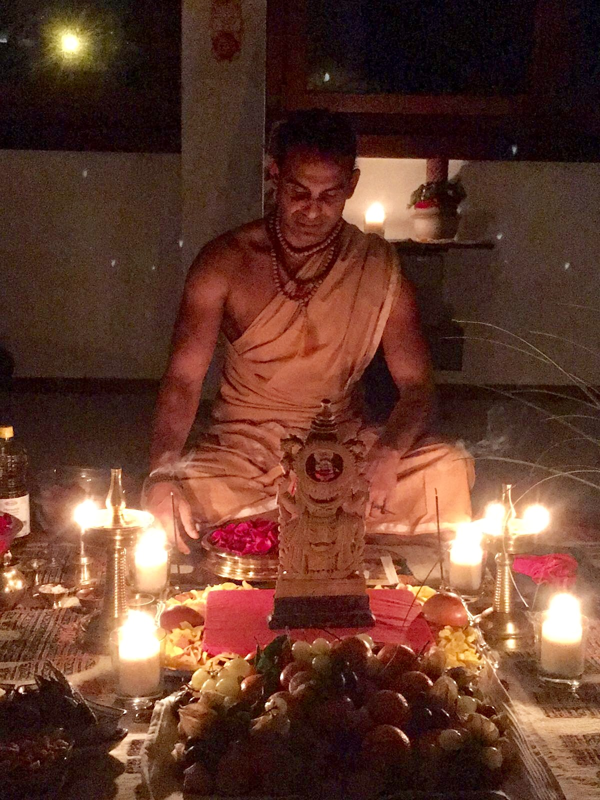
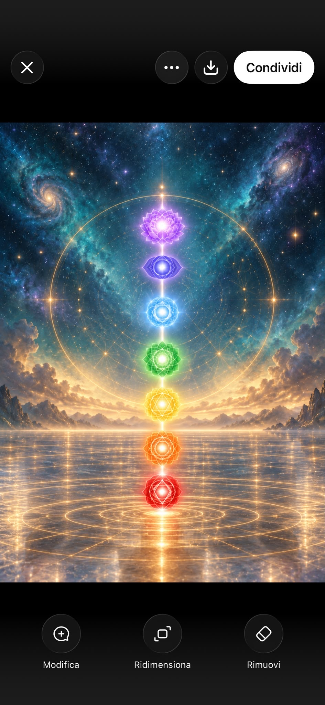
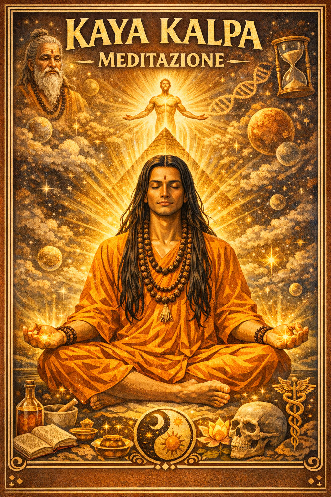
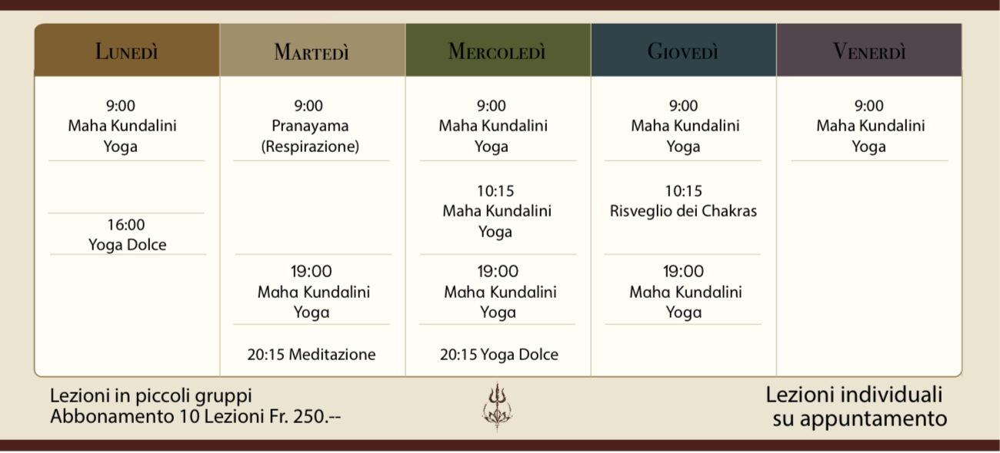

Un centro autentico e accogliente a Sorengo-Lugano in Via Ponte Tresa 7B. Guidato direttamente dall'Acharya Sooryanarayan (Mohan) per Hatha Yoga, Maha Kundalini Yoga, Kayakalpa, sedute di Karma Reading & Healing e ritiri in Kerala.

Prendendo il nome dalla Dea Parvati — simbolo universale di devozione, grazia e forza armoniosa — il nostro centro è attivo a Sorengo in Via Ponte Tresa 7B dal 1996, a pochi minuti dal centro di Lugano.
Non pratichiamo yoga commerciale né ginnastica affrettata. La vita è bella: con lo yoga scopriamo la bellezza interiore attraverso la respirazione consapevole (Pranayama), le posture stabili (Asana) e la calma mentale, rispettando il ritmo individuale di ciascun corpo sotto la guida diretta dell'Acharya Sooryanarayan.
Adatta sia a principianti che a praticanti esperti.
Attenzione personalizzata e cura per ogni praticante.

Nato in Kerala, nel sud dell'India, ha praticato yoga sin dall'infanzia secondo la tradizione familiare, approfondendo poi con grandi Maestri nell'Himalaya.

Guida Spirituale • Maestro di Kayakalpa & Maha Kundalini Yoga
Nato in Kerala (India), ha praticato yoga sin dall'infanzia come da tradizione familiare. Dopo una formazione universitaria ha approfondito le discipline di yoga, meditazione, mantra, rituali e filosofia con grandi Maestri nell'Himalaya, insegnando Hatha e Maha Kundalini Yoga presso la celebre Yoga Vedanta Forest Academy, Sivananda Ashram a Rishikesh.
Nel 1996 ha fondato a Sorengo il centro Parvati Scuola di Yoga, guidando generazioni di praticanti in Ticino e tenendo corsi, seminari internazionali e ritiri residenziali all'Ashram Santhivanam in Kerala.
Quale autentica autorità nel metodo Kayakalpa e nella rigenerazione cellulare, l'Acharya trasmette una disciplina esatta che agisce direttamente sul sistema biologico ed energetico per ripristinare il Prana vitale.
Dalle posture dolci dell'Hatha Yoga all'energia sottile del Maha Kundalini e alla rigenerazione cellulare del Kayakalpa.
Combinazione di Asana, respirazione dolce e risveglio del Prana interiore assopito alla base della colonna, trasformando il corpo e donando stabilità mentale e vitalità luminosa.
Millenaria scienza dei Siddha trasmessa dall'Acharya Sooryanarayan per il ringiovanimento cellulare, la tonificazione degli organi interni e la trasmutazione dell'energia vitale essenziale.

Tecniche mirate di Maha Kundalini Pranayama, Fire Breathing (respirazione del fuoco) e silenzio mentale per ripulire i canali sottili, sciogliere ansia e stress e stabilire la quiete interiore.
Sedute individuali su appuntamento a Sorengo condotte direttamente dall'Acharya Sooryanarayan per sciogliere blocchi karmici e rigenerare il corpo.
Tutti siamo curiosi di sapere il nostro futuro, ma per conoscere il futuro è indispensabile comprendere il passato. Karma Reading aiuta a comprendere le vite passate e come le energie trasmesse influiscono sulla vita attuale, illuminando sui blocchi per liberarsene definitivamente.
Un percorso individuale mirato ad individuare i blocchi karmici radicati, fornendo gli strumenti energetici per neutralizzarli ed eliminarli dalla vita presente, così da diventare Maestri della propria vita e progettare il proprio futuro.

Combinazione di chakra massage, Fire Breathing (respirazione del fuoco), canalizzazione del Prana e tecniche ayurvediche per ripristinare il flusso energetico, eliminare scorie e dolori cellulari e ridonare un corpo forte e una mente serena.
Lezioni in piccoli gruppi per garantire la massima attenzione individuale. Sede di Via Ponte Tresa 7B, Sorengo.
Disponibile su richiesta per conoscere la scuola e l'Acharya.
Valido per tutte le lezioni di gruppo settimanali in sala.
Karma Reading, Karmic Healing e lezioni private su appuntamento.
| Giorno | Orario | Corso / Disciplina | Insegnante |
|---|---|---|---|
| Lunedì | 09:00 | Maha Kundalini Yoga | Acharya Sooryanarayan |
| 16:00 | Yoga Dolce | Acharya Sooryanarayan | |
| Martedì | 09:00 | Pranayama (Respirazione) | Acharya Sooryanarayan |
| 19:00 | Maha Kundalini Yoga | Acharya Sooryanarayan | |
| 20:15 | Meditazione | Acharya Sooryanarayan | |
| Mercoledì | 09:00 | Maha Kundalini Yoga | Acharya Sooryanarayan |
| 10:15 | Maha Kundalini Yoga | Acharya Sooryanarayan | |
| 19:00 | Maha Kundalini Yoga | Acharya Sooryanarayan | |
| 20:15 | Yoga Dolce | Acharya Sooryanarayan | |
| Giovedì | 09:00 | Maha Kundalini Yoga | Acharya Sooryanarayan |
| 10:15 | Risveglio dei Chakras | Acharya Sooryanarayan | |
| 19:00 | Maha Kundalini Yoga | Acharya Sooryanarayan | |
| Venerdì | 09:00 | Maha Kundalini Yoga | Acharya Sooryanarayan |
* Gli orari possono variare in concomitanza con seminari intensivi o ritiri in India. Contattaci per confermare il calendario aggiornato.

Gli allievi di Parvati Scuola di Yoga hanno l'opportunità unica di proseguire la loro pratica nei ritiri residenziali presso il nostro ashram in India: Santhivanam Yoga Ashram a Kanakamala, Kerala.
Tra colline tropicali incontaminate, cibo ayurvedico puro e sadhana quotidiana con l'Acharya Sooryanarayan, l'esperienza a Santhivanam trasforma la comprensione dello yoga in un'esperienza vivente e profondamente rigenerativa.
La scuola è situata a Sorengo in Via Ponte Tresa 7B, a 5 minuti dal centro di Lugano. Scrivici su WhatsApp o compila il modulo sottostante.
Parvati Scuola di Yoga
Via Ponte Tresa 7B
6924 Sorengo (Lugano)
Canton Ticino, Svizzera
Facilmente accessibile a 5 minuti da Lugano, vicino alla fermata del trenino Lugano-Ponte Tresa (stazione Sorengo).
WhatsApp / Mobile: +41 79 468 32 58
Telefono Fisso: +41 91 994 50 68
info@yogaparvaty.com
i.parvati@bluewin.ch
kayakalpayogam@gmail.com
Invia un messaggio diretto all'Acharya su WhatsApp con i dettagli della tua richiesta.